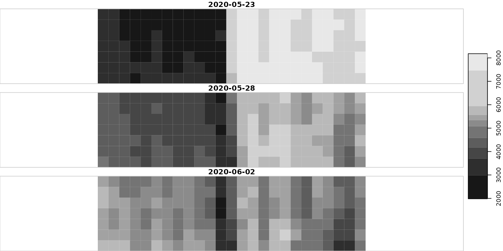

Load the paths of rasters included in a Sentinel-2 archive
generated with {sen2r}, filtering relevant files and ordering them.
Output can also be returned in format stars or stars_proxy
(see argument out_format).
load_s2paths(
inpath,
out_format = "path",
prod_type,
time_window,
s2_orbits,
s2_sensors,
file_ext,
bbox,
.use_vrt = FALSE
)Path of the directory in which {sen2r} files are stored.
(optional) Output format, being one among
"path" (default), "stars" and "stars_proxy").
(optional) sen2r product type to import
(used for filtering among inpath content).
(optional) time window to import
(used for filtering among inpath content).
(optional) Sentinel-2 orbits to import
(used for filtering among inpath content).
(optional) Sentinel-2 sensor to import ("2A", "2B" or both)
(used for filtering among inpath content).
(optional) input file extension
(used for filtering among inpath content).
(optional) object of class sf, sfc or bbox used to import
a subset of the original raster extent.
(optional) pass through a temporary VRT before creating stars?
The output raster cube in the selected format.
# Path of a sample archive created with sen2r (see ?sample_paths)
archive_dir <- system.file("extdata/sen2r/sampleroi", package = "sen2rts")
# Default function behaviour
sen2r_ndvi_paths <- load_s2paths(file.path(archive_dir, "NDVI"))
gsub(archive_dir, "", head(sen2r_ndvi_paths))
#> [1] "/NDVI/S2B2A_20200104_022_sampleroi_NDVI_10.tif"
#> [2] "/NDVI/S2A2A_20200109_022_sampleroi_NDVI_10.tif"
#> [3] "/NDVI/S2B2A_20200114_022_sampleroi_NDVI_10.tif"
#> [4] "/NDVI/S2A2A_20200119_022_sampleroi_NDVI_10.tif"
#> [5] "/NDVI/S2B2A_20200124_022_sampleroi_NDVI_10.tif"
#> [6] "/NDVI/S2A2A_20200129_022_sampleroi_NDVI_10.tif"
# Specifying argument prod_type, the parent directory can also be provided:
sen2r_scl_paths <- load_s2paths(archive_dir, prod_type = "SCL")
gsub(archive_dir, "", head(sen2r_scl_paths))
#> [1] "/SCL/S2B2A_20200104_022_sampleroi_SCL_10.tif"
#> [2] "/SCL/S2A2A_20200109_022_sampleroi_SCL_10.tif"
#> [3] "/SCL/S2B2A_20200114_022_sampleroi_SCL_10.tif"
#> [4] "/SCL/S2A2A_20200119_022_sampleroi_SCL_10.tif"
#> [5] "/SCL/S2B2A_20200124_022_sampleroi_SCL_10.tif"
#> [6] "/SCL/S2A2A_20200129_022_sampleroi_SCL_10.tif"
# Filter on dates and return a stars raster cube
sen2r_ndvi_cube <- load_s2paths(
archive_dir, prod_type = "NDVI",
time_window = c("2020-05-20", "2020-06-05"),
out_format = "stars"
)
plot(sen2r_ndvi_cube)
